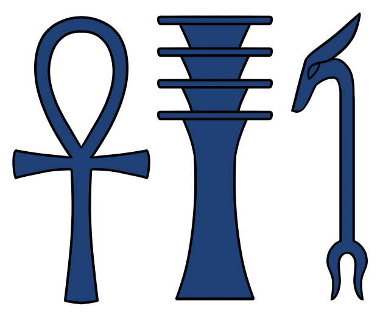

Анх
«Ключ жизни» · знак дыхания и вечности · жизнь, которую можно дать

Что такое анх
Анх (егип. анх — «жизнь») — самый известный сакральный знак Египта: крест с петлёй, «ключ жизни». В иероглифах он — само слово «жизнь», в амулетах — уже «вещество» жизни: сила, которую можно носить, дарить, подносить к губам. «Дарование жизни» — стандартная сцена рельефов: боги подносят анх к губам фараона, как дыхание.
Происхождение и форма
Форма без окончательного происхождения: одна из самых старых гипотез восходит к зеркалу — петля на рукояти, свёрнутое зеркало, символ вечности; другие видят в знаке завязанный узел или окружность вечности. Знак древнейший: вертикальный стержень, горизонталь, петля.
Магическое применение
Амулет анха носили на шее ради жизни и защиты от болезней. В заклинаниях исцеления жрец держал анх у носа больного, «вдувая» ему жизнь. Фараон дарил анх подданным как знак благословения. Ритуальный анх делали из золота — металла солнца: каждый знак требовал своего материала.
Формула «жизнь — власть — стабильность»
Три великих знака составили стандартную формулу: анх + уас + джед — «Жизнь, Власть, Стабильность». В таком трио их высекали на саркофагах и рельефах. Пара уас + анх — «Власть и Жизнь» — формула божественного правления: именно эти два знака держат в руках боги и фараон.